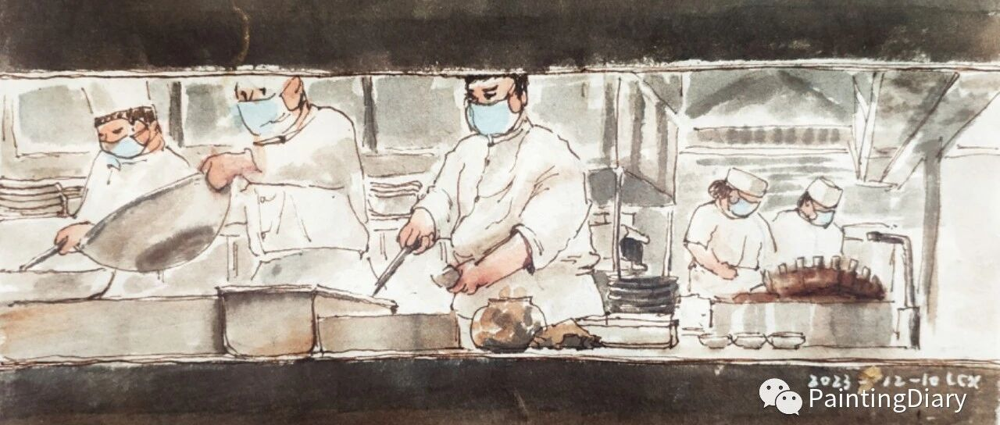

人间烟火
原创
LCX
LCX
PaintingDiary
2023年12月10日 17:43
北京
在小说阅读器中沉浸阅读
这周的主题是——吃的（bushi），
昨天去看北京画院美术馆
主办的“借山吟——齐白石的画意诗心”展，
包含大师的一些文稿和画作：
从小鸡到鱼、到螃蟹再到虾，还有海鲜杂烩、
瓜果蔬菜，应有尽有。
一开始还可以认真欣赏大师绝妙的构图和传神又凝练的笔触，
看久了就
……有点想去吃饭
……
吃饭的位置正好可以看到大厨们忙碌的身影，
升腾的蒸汽，明亮的灶火，行云流水的动作，
还有端上来的一道道冒着热气、香味扑鼻的饭菜，
原来静静地等着开饭就是件非常幸福的事情呀。
顿时有点get到为什么大师的画那么简单却那么打动人。
果然不论是
小虾小蟹，还是锅碗瓢盆，油盐酱醋，
生活的美好就体现在这些细枝末节里。
一粥一饭，一颦一笑，一轮春夏秋冬，
我们在地球上的每一秒都值得去感恩，不是吗～
最后斗胆临摹一张大师的虾虾：
为了不误导孩子，还是放上大师原作：
好啦，今天先到这里吧，
欢迎留言、转发or给个"在看"哟～蟹蟹，
最后祝大家晚饭用餐愉快～
虾回见～☀️

 ……有点想去吃饭……
……有点想去吃饭……

 ……有点想去吃饭……
……有点想去吃饭……